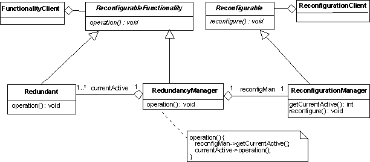

Reconfiguration Management Design Pattern
Intent
Decouple the use of a redundant functionality from the management and implementation of the redundancy switching logic.
Based On
This pattern is essentially identical to the reconfiguration management pattern of the AOCS Framework (see also: A. Pasetti, Embedded Control Systems and Software Frameworks, Springer-Verlag, 2002).
Motivation
If the same functionality can be implemented in two or more independent ways, then the functionality is said to be redundant. A redundant functionality can be reconfigured. Reconfiguration means switching between different independent implementations of the same functionality.
Reconfigurability is often used in OBS applications to provide robustness to faults. This is typically done for external sensors and actuators. When a fault is detected in one of these units, a reconfiguration is performed that replaces the faulty unit with its redundant pair. The concept proposed here is more general and can be applied to any functionality for which several implementations are available. The functionalities that must be reconfigurable and the way in which reconfigurations are performed are obviously application-specific. The problem addressed by this design pattern is to define an application-independent mechanism for handling reconfigurations in a generic manner.Dictionary Entries
The following abstractions or domain-wide concepts are defined to support the implementation of this design pattern:
Structure
Functionalities are implemented as services provided by components. The
functionality with respect to which reconfiguration takes place is called the
reconfigurable functionality. Conceptually, this can be
represented by an abstract interface ReconfigurableFunctionality.
ReconfigurationManager. This component implements
the ReconfigurableFunctionality interface and therefore
"looks like" a provider of the reconfigurable functionality. The
multiple (and equivalent) implementations of the reconfigurable functionality are
provided by the Redundant components. At any given time,
one of these is selected by the reconfiguration manager as the
active redundant component. The reconfiguration manager implements
the reconfigurable functionality by delegating it to the
currently active redundant component.
The reconfiguration manager implements a second interface -
Reconfigurable - that represents the "face" it
offers to the reconfiguration client. This interface declares the
operations that are required to handle the reconfiguration
process. The key operation is reconfigure that
is called by the reconfiguration client to start a reconfiguration.
In response to a call to this operation, the reconfiguration
manager reviews the available implementations of the
reconfigurable functionality and decides whether a new
implementation should be selected.
Participants
FunctionalityClient:The component that is interestd in accessing the reconfigurable functionality. ReconfigurationClient:The component that commands reconfigurations. ReconfigurableFunctionality:The abstract interface that defines the reconfigurable functionality. Reconfigurable:The abstract interface that declares the operations required to handle the reconfiguration process. Redundant:The concrete class that implements the multiple and equivalent implementations of the reconfigurable functionality. This could a configurable class with different configurations representing different implementations of the reconfigurable functionality or an abstract class with several concrete subclasses each implementing one implementation of the reconfigurable class. ReconfigurationManager:Component responsible for implementing a reconfiguration and for presenting the reconfigurable functionality to the reconfiguration clients.
Collaborations
The reconfiguration managers plays two roles and there are two typical collaboration sequences in which it is involved. The first one arises when a functionality client needs to access the reconfigurable functionality:
-
The functionality access the functionality through the
reconfiguration manager (which it sees as an instance of type
ReconfigurableFunctionality). - The reconfiguration manager identifies the currently active redundant component and forwards to it the client request.
-
The reconfiguration client sends a reconfiguration request
to the reconfiguration manager (which it sees as an instance of type
Reconfigurable). - The reconfiguration manager checks whether a reconfiguration is possible and, if so, it changes its currently active redundant component.
Consequences
- Functionality clients are completely decoupled from the management of the reconfiguration. They access an abstract functionality and can assume that it has only one single implementation. Conversely, the reconfiguration clients are shielded from knowledge of the redundany functionality.
- The reconfiguration algorithm (the algorithm used to select a new active redundant component when a reconfiguration request is issued) is conveniently encapsulated in the reconfiguration manager and can be easily changed without impact on either the functionality or reconfiguration clients.
- The functionality clients access the reconfiguration functionality through the reconfiguration manager. This introduces an additional layer of indirection with a consequent loss of performance.
Applicability
There is a need to handle reconfigurable functionality and it is desired to make the application independent of which functionalities are reconfigurable.
Implementation Issues
The class diagram shown above implies a situation where the reconfiguration manager implements two abstract interfaces. In a language like C++, this requires use of multiple inheritance. If multiple inheritance is not allowed, an implementation as in the figure can be used:

The reconfiguration manager now becomes only responsible for selecting an abstract configuration. A separate component is responsible for using this information to re-route accesses to the reconfiguration functionality to the appropriate redundant component.With the implementation suggested in the previous paragraph, the reconfiguration management pattern becomes very similar to the mode management pattern. The reconfiguration manager then plays the role of the mode manager and a reconfiguration becomes equvalent to a change of operational mode.
The redundant class in the class diagrams encapsulates the implementation of the reconfigurable functionality. There must be several alternative, but functionally equivalent, implementations of this functionality. These can be provided by different instances of the same class or by instances of different subclasses of the same super class.
OBS Framework Mapping
The implementation of this design pattern in the OBS Framework is supported by the following classes:
- ReconfigurationManagercomponent -->
DC_BasicReconfigurer - Reconfigurableabstract interface --> not directly supported
Sample Code
Consider a reconfiguration manager that must handle two redundant sensors. Its key methods could be implemented as follows:
class SensorReconfigurer : public Reconfigurable {
Sensor sensor[2];
bool isHealthy[2];
Sensor* activeSensor;
. . .
void reconfigure() {
if ( (activeSensor == sensor[0]) && (isHealthy[1]) ) {
activeSensor = sensor[1];
isHealthy[0] = false;
}
if ( (activeSensor == sensor[1]) && (isHealthy[0]) ) {
activeSensor = sensor[0];
isHealthy[1] = false;
}
}
Data getSensorData() {
activeSensor->getSensorData();
}
}
This reconfiguration manager keeps track of the health status of
the sensors it manages and it performs a switch to the non-active
sensor if it is healthy. Otherwise it does nothing.
Reconfigurations are often initiated by telecommand. If the
telecommand management design
pattern is used to implement telecommands, then a reconfiguration
telecommand can be constructed as follows:
class ReconfigTc : public Telecommand {
Reconfigurable* r;
. . .
void execute() {
r->reconfigure();
}
}
Note that the telecommand is defined in terms of an abstract
reconfiguration manager of type Reconfigurable.
This makes it possible to use the same telecommand to reconfigure
different types of reconfiguration functions.
Remarks
None
Author
A. Pasetti (P&P Software)
Last Modified
2003-04-19